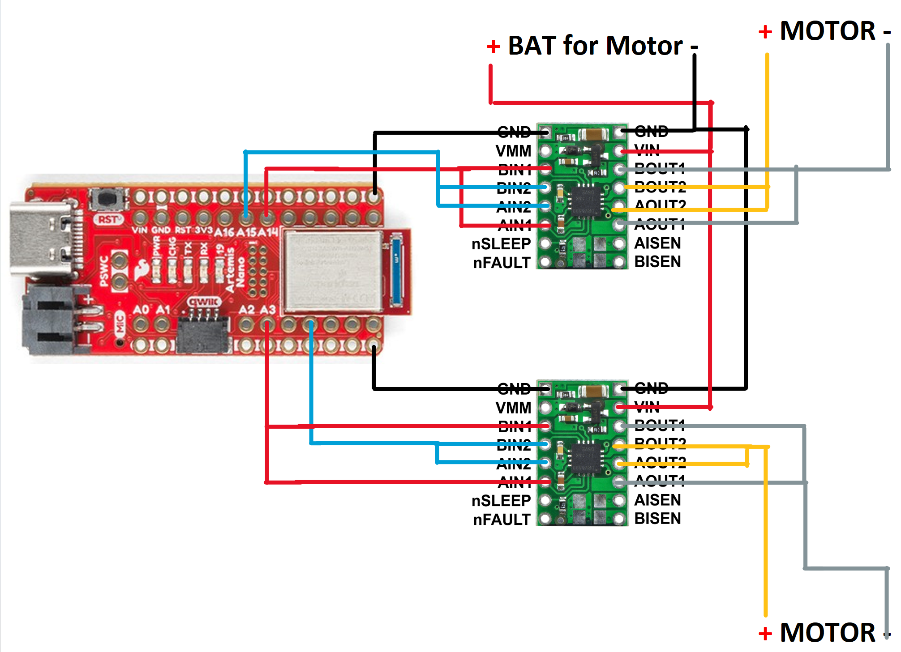
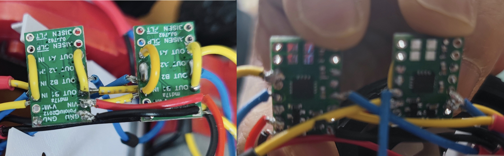

Prelab
Setup for Motor Drivers
According to the schematic, integration guide, and currently available pins, I chose to use PIN 2,5,14,15 as output pin to output PWM signals to two driver boards. The intended connection is shown in Figure 1. The full connection(include IMU, ToF, switches) is shown in Figure 2.
Battery Discussion
In my design, I separated the motor and microcontroller power supplies to isolate the sensitive electronics from the electrical noise generated by the motor and to prevent erratic behavior. Moreover, it meets the different voltage requirements of the motor and Artemis, and prevents voltage drops from high motor current draw from affecting the microcontroller. It also protects the microcontroller from potential damage caused by motor or driver failure.
Lab tasks
I soldered the motor drivers, motors, batterym, and Artemis shown in figure 3 following the connection scheme shown in figure 1. Then I built the interior structure of the robot shown in figure 4 and 5 using the two brackets shown in figure 6 and 7. The final appearance is shown in Figure 8. Since I realized after installing the internal structure that I forgot to take a picture of how the driver board is connected to the artemis, please refer to Figure 1 for the specific connection.
To test the connection to Artemis' dual motor drivers, I used a 850mah battery as the driver's input and an oscilloscope to read the driver's inputs and outputs:

I added following command to the ble_arduino.ino used in previous lab, thus I can controll the motors via BLE and computer. The python script used is also shown below.
As shown in the video, the left motor can rotate as expected by sending command via BLE from computer to artemis. First, it rotated forward, then backward.
Four wheels (two motors) also rotated as expected. First the right motor spins forward, then the left motor spins forward, followed by both motors spinning forward then backward together, and finally stopping.
Lower limit PWM value discussion
To test the lower limit PWM value of the robot starting moving on the ground, and since my analogwrite resolution is 16bits, I can set pwm from 0 to 65525, I increased the PWM value from 0 to 15000 until the wheels were able to start moving from a stationary position. The lower limit values for motors are around 8000, as shown in the video.
I used the same method to test the lower limit PWM value of the robot starting turning on-axis, I increased the PWM value from 37000 to 50000. The lower limit values for motors are around 39300, as shown in the video.
Calibration demonstration
Since the two motors have different output torques, they need to be calibrated so that the robot can move in a straight line. The video below demonstrates applying the same pwm wave to both motors. As shown in the video, the robot veers left a little bit.
This represents the output torques of right motor is larger. Therefore, I need to add a correction factor for the left motor. After testing, the coefficient is 1.06, since when I used 21200 for pwm of left motor, and 20000 for pwm of right motor, the car can move in a straight line, as shwon in the following video.
Open loop
To demonstrate open-loop control of the robot, I transmitted the following commands to the robot and recorded the video. The robot does what the code expects, it goes forward, then back, then right, then left, then rotates clockwise, then rotates counter-clockwise, and finally stop.
analogWrite frequency discussion
The default PWM frequency for generated by analogWrite() on most Arduino models is around 490 Hz. According to the figure 10, the frequency on Artemis board is around 414Hz. This frequency is sufficient for a reasonable balance between efficient motor operation and minimal audible noise. I can manually configure the CTIMER and total counts in a PWM period to generate a faster PWM signal which lead to smoother motor operation and can be used in applications that require precise motion to provide finer motor speed and torque control.

Lowest PWM value speed discussion
To find the lowest PWM value that would keep the motor moving, I first made the car moving from rest, and then sent the lower value to Artemis over BLE to find the value that would stop the motor. According to the test, the lowest PWM value is xxx for the right motor and xxx for the left motor, as shown in the following video.